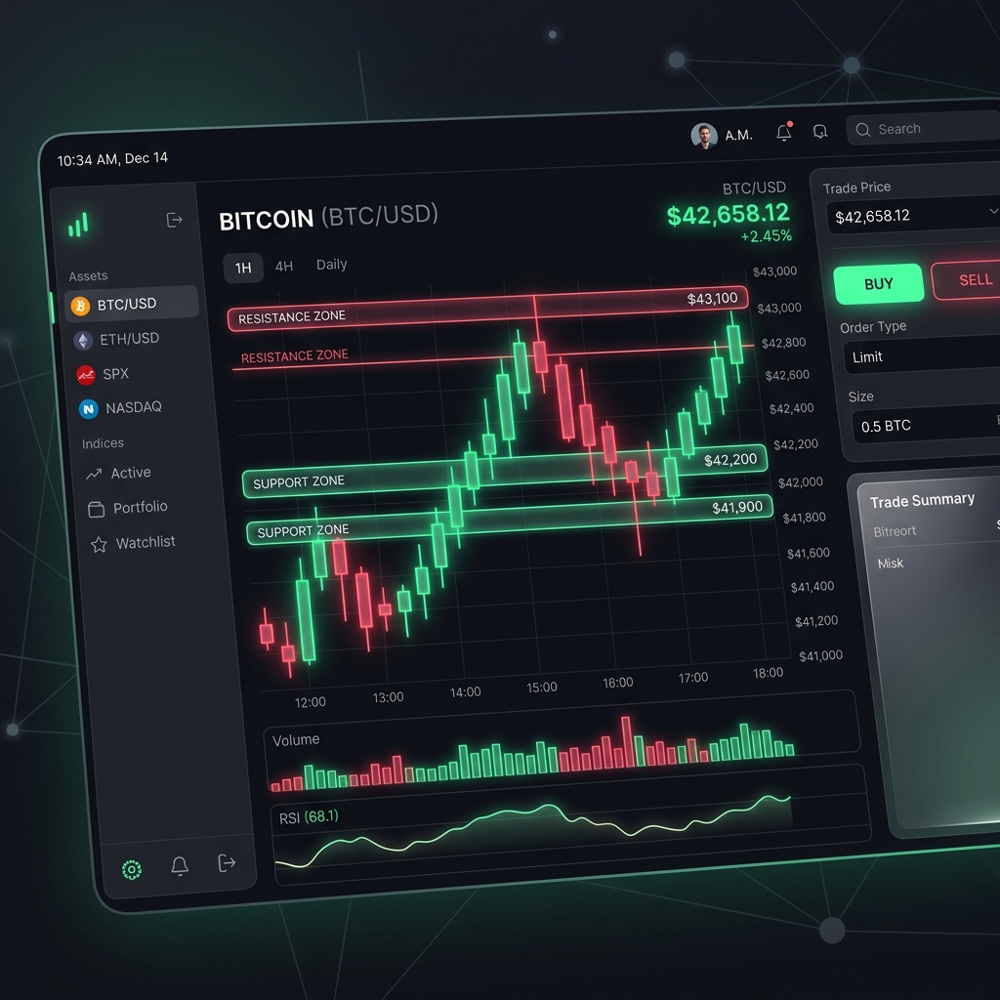
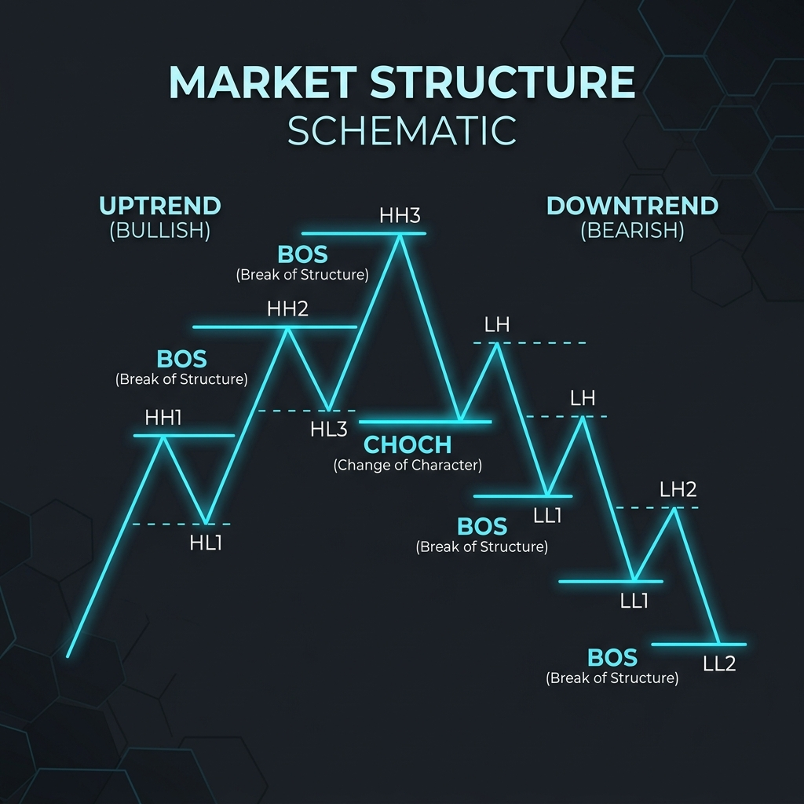

Alchemist SNR stratejisi, geleneksel destek ve direnç kavramlarını (MSNR) alıp, bunu kurumsal paranın hareketleriyle (SMC) harmanlayan ileri düzey bir analiz yöntemidir. Bu eğitimin özeti, piyasada "ne zaman" ve "nerede" işleme girmeniz gerektiği konusunda size kesinlik kazandırmayı hedefler.
1. MSNR'nin Temeli: "Taze (Fresh) Bölge" Mantığı
MSNR (Malaysian SNR), sıradan destek/direnç çizgilerinden farklıdır. Burada en önemli kural "Fresh (Taze)" bölgeleri bulmaktır. Bir destek veya direnç noktası daha önce hiç test edilmemişse, fiyat oraya ilk geldiğinde tepki verme olasılığı (High Probability) çok yüksektir.
- A Bölgesi (Support): Fiyatın hızla fırladığı ve henüz geri dönüp dokunmadığı temiz alandır.
- V Bölgesi (Resistance): Fiyatın sert bir şekilde düştüğü ve test edilmemiş tepe noktasıdır.

2. SMC Entegrasyonu ve Piyasa Yapısı
Sadece destek ve direnç çizmek yetmez. Alchemist stratejisinde bunu Piyasa Yapısı (Market Structure) ile doğrularız. Büyük resimde trend ne yöne gidiyor?
Önemli Kavramlar:
- BOS (Break of Structure): Trendin devam ettiğini gösteren yapı kırılımıdır. Yükseliş trendinde bir önceki tepenin kırılmasıdır.
- CHOCH (Change of Character): Trendin değiştiğine (döndüğüne) dair ilk sinyaldir. Fiyatın karakter değiştirmesidir.

💡 Alchemist'in Altın Kuralı (Storyline)
Çoklu Zaman Dilimi (Multi-Timeframe) analizi şarttır! Hikayeyi Günlük (Daily) veya 4 Saatlik (4H) grafikte okuyun, kırılımları ve taze bölgeleri bulun. İşleme girişi (Entry) ise 1 Saatlik (1H) veya 15 Dakikalık (15m) grafiklerdeki onaylar (Confirmation) ile yapın.
Çoklu Zaman Dilimi (Multi-Timeframe) analizi şarttır! Hikayeyi Günlük (Daily) veya 4 Saatlik (4H) grafikte okuyun, kırılımları ve taze bölgeleri bulun. İşleme girişi (Entry) ise 1 Saatlik (1H) veya 15 Dakikalık (15m) grafiklerdeki onaylar (Confirmation) ile yapın.
3. Stratejinin Uygulanış Adımları
- HTF (Yüksek Zaman Dilimi) Yönü Belirle: Fiyat haftalık veya günlükte nereye gidiyor? Yakında bir HTF taze MSNR bölgesi var mı?
- Bekle (Patience): Fiyatın belirlediğiniz bu "High Probability" (Yüksek İhtimal) bölgesine gelmesini bekleyin. Arada oluşan gürültüde (consolidation) işlem yapmayın.
- LTF (Düşük Zaman Dilimi) Onayı Al: Fiyat MSNR bölgesine geldiğinde körü körüne girmeyin. Düşük zaman diliminde (örn: 15m) bir CHOCH (Karakter Değişimi) arayın.
- İşleme Gir ve Hedef Belirle: CHOCH oluştuktan sonra, geri çekilmede (pullback) işleme girin. Hedefiniz bir sonraki MSNR likidite bölgesi olmalıdır.